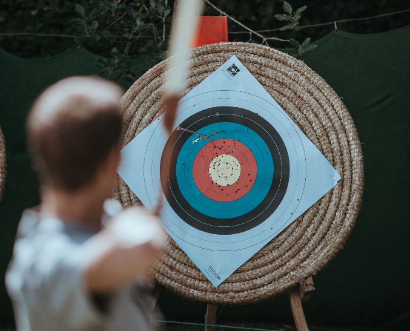

Mijn Hobby's en Intresses
Welkom op mijn hobby pagina! Hier deel ik mijn diverse interesses, van gamen en boogschieten tot hiken, reizen en programmeren. Ontdek mijn passies en laat je inspireren. Kom regelmatig terug voor updates en nieuwe avonturen!
Reizen
Reizen is mijn grootste passie, en het stelt me in staat om de prachtige diversiteit van onze wereld te ontdekken. Twee bestemmingen hebben een speciale plek in mijn hart veroverd: Japan en Slovenië.
Japan, het land van contrasten, heeft me betoverd met zijn mix van oude tradities en moderne innovatie. Van de serene tempels en theeceremonies in Kyoto tot de bruisende stadsdrukte van Tokyo, elke hoek van Japan is een nieuwe verrassing.
Slovenië daarentegen biedt een natuurlijke schoonheid die mijn ziel raakt. Van de adembenemende Alpen en de glinsterende meren tot de pittoreske dorpjes, het is een bestemming voor natuurliefhebbers en avonturiers.
Het verkennen van deze twee unieke culturen en landschappen heeft mijn reisverslaving alleen maar aangewakkerd. Reizen stelt me in staat om de wereld in al zijn pracht en praal te ervaren, en ik kijk ernaar uit om nog veel meer van onze prachtige planeet te ontdekken.
{kind=link}
{kind=link}
{kind=link}
{kind=link}
{kind=link}
Boogschieten
Boogschieten is mijn passie en mijn ontsnapping naar een wereld van concentratie en precisie. De kracht van de boog, het suizen van de pijl, en het moment van perfecte trefzekerheid vormen een harmonieus samenspel dat me telkens weer betovert. Of ik nu in de natuur sta of op de schietbaan, boogschieten geeft me rust en uitdaging in één. Het is meer dan een hobby; het is een kunst die ik koester en altijd zal blijven verkennen.

Gamen
Gaming is mijn ontsnapping naar andere werelden, mijn avontuurlijke reis zonder mijn stoel te verlaten. Of het nu in de rol van een dappere held is of als een stratagemaster, games bieden me de mogelijkheid om te verkennen, uit te dagen en te ontspannen. Van epische gevechten tot meeslepende verhalen, mijn gaming-hobby is een constante bron van opwinding en plezier. Het is meer dan alleen spelen; het is het creëren van herinneringen en het delen van geweldige ervaringen met gelijkgestemde gamers over de hele wereld.

Programmeren
Programmeren is mijn digitale kunstvorm. Met lijnen code schep ik nieuwe werelden, bouw ik innovatieve toepassingen en ontrafel ik complexe problemen. Elk project is als een puzzel die ik met precisie en creativiteit oplos. Het proces van coderen daagt me uit, inspireert me en laat me groeien als een probleemoplosser. Mijn hobby in programmeren is meer dan alleen technologie; het is mijn passie voor het scheppen van mogelijkheden en het vormgeven van de toekomst.